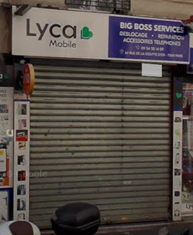

Transgourmet France (Siege social)
Installation de Microsoft Office 365 vers les postes clients utilisateurs. Vérification des postes client s’il possèdent Microsoft 365. Migration de Microsoft 2019 vers Microsoft 36.
Au cours de mes différents stages, j'ai développé une expertise polyvalente allant de l'administration d'infrastructures réseaux à la maintenance électronique de précision. Mon parcours m'a permis d'intervenir sur des environnements techniques variés, garantissant le maintien en condition opérationnelle des services informatiques.

Installation de Microsoft Office 365 vers les postes clients utilisateurs. Vérification des postes client s’il possèdent Microsoft 365. Migration de Microsoft 2019 vers Microsoft 36.

Installation ( GRR : gestion des réservations et ressources). Migration d’une ancienne base de données. Configuration d'un Serveur Web.

Réparation de smartphones ( matériels et logiciels), de tablettes, d'ordinateurs, de la Micro-soudure et de la carte mère.

Réparation de smartphones ( matériels et logiciels), de tablettes, d'ordinateurs, de la Micro-soudure et de la carte mère.